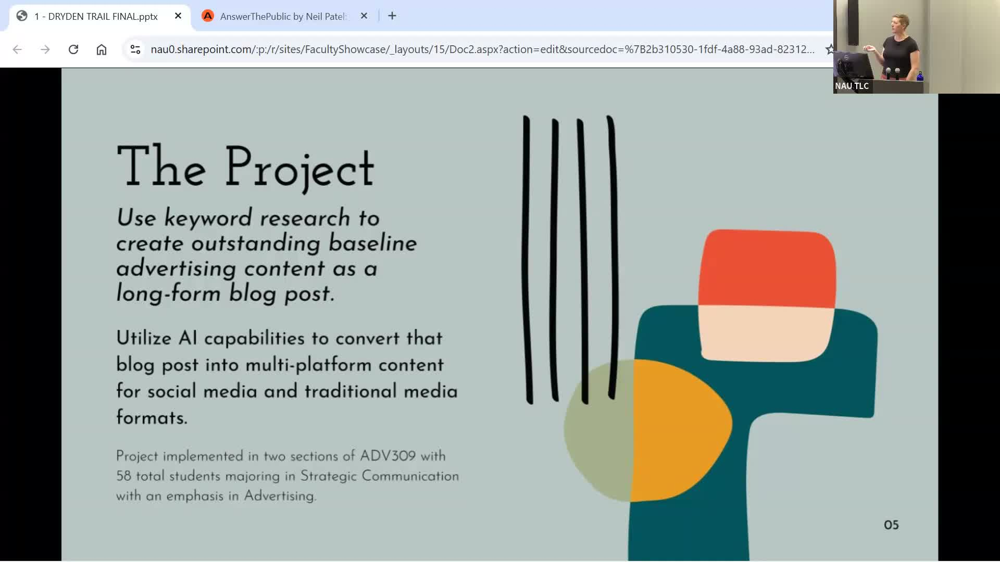
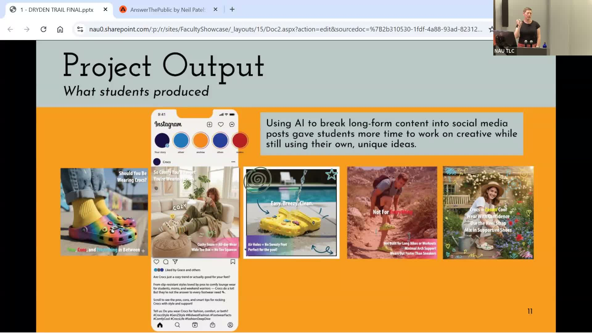

AI as a Content Partner in Advertising Education
Teaching advertising students to use AI as an amplifier of their own creative work, not a replacement for it.
Presented by Amy Dryden, Professor of Practice in Strategic Communication, NAU
About This Project
Before designing any AI assignment, Amy Dryden interviewed 17 recent graduates working in advertising and public relations to find out how AI was actually being used in their jobs. They described using it to streamline workflows, scale content production, and support social media copywriting, but every one of them stressed that human oversight was essential to avoiding generic output. One graduate put it plainly: "AI isn't the creator, it's the amplifier." That principle became the foundation for Dryden's project in her advanced advertising design course, ADV 309.
Students began by conducting long-tail keyword research to understand what real audiences were searching for around a chosen product. They then wrote a substantial blog post entirely without AI assistance. In the second phase, they used AI to transform that post into a multi-platform content suite: Instagram captions, TikTok scripts, email newsletters, and additional social copy. By requiring students to create the foundational content first, the project ensured that AI was shaping and extending human ideas rather than generating them from scratch. Pre- and post-project surveys showed that students moved from vague concern about AI to a more grounded sense of how to use it purposefully and ethically in a professional advertising context.
Project Highlights

